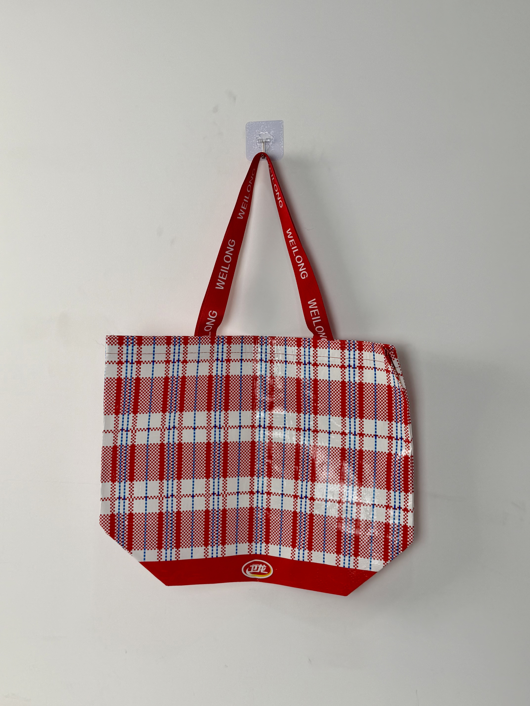

A retro-nostalgic red-white-blue checkered woven bag that transforms China's most familiar shipping material into a bold fashion statement for the country's most iconic snack brand.

WeiLong is China's most iconic spicy-strip brand, having built a multi-billion-RMB empire through self-aware marketing that consistently subverts expectations. The brand's genius lies in transforming humble, even kitsch, visual elements into desirable cultural artifacts. This woven tote exemplifies that strategy: it takes the red-white-blue checkered pattern universally associated with cheap shipping bags and construction site tarps — an object of working-class utility — and reclaims it as streetwear.
The best brand moments happen when you take something everyone recognizes and make them see it differently. Our checkered bag isn't ironic — it's iconic.
The project emerged from WeiLong's observation that independent fashion designers had begun incorporating red-white-blue woven material into high-end collections. Rather than allowing other brands to own this cultural moment, WeiLong moved decisively to claim the pattern as its own — creating an officially branded version that connected the fashion trend directly back to the snack brand that first popularized it.
The design strategy is radical minimalism: let the material itself be the message. The red-white-blue checkered pattern requires no explanation — it is already embedded in Chinese visual culture as the default material of freight, migration, and labor. By reproducing this pattern at premium quality with branded ribbon handles, WeiLong performs a cultural alchemy that elevates the mundane into the desirable.
China's most recognizable woven pattern transformed from shipping material into fashion statement.
Red woven tape with repeating WEILONG wordmark adds brand ownership and premium tactile detail.
Small WeiLong logo at base provides discrete brand attribution without disrupting pattern purity.
High-tenacity polypropylene construction withstands daily abuse while maintaining visual crispness.
The woven checkered tote represents a different manufacturing approach from standard non-woven bags. The fabric itself is structural — the pattern is woven into the material rather than printed on it — requiring specialized loom equipment and yarn color matching.
| Parameter | Specification | Test Standard |
|---|---|---|
| Load Capacity | 8 kg | ASTM D5265 |
| Tear Resistance | > 45 N | ASTM D2261 |
| UV Stability | Grade 4-5 | ISO 105-B02 |
| Seam Strength | > 30 N/cm | ASTM D1683 |
Woven checkered bags require circular loom weaving — a production method distinct from flat non-woven fabric. The four-stage workflow incorporates specialized textile equipment for pattern weaving and laminated finishing.
Red, white, and blue PP tapes extruded with color masterbatch. Pantone matching ensures consistent grid color across production batches.
Multi-shuttle circular loom interlaces colored tapes into tubular checkered fabric. Grid pattern formed structurally during weave process.
Clear BOPP film laminated for surface protection. Calendering flattens weave texture while preserving visible grid dimensionality.
Precision cutting with heat-sealed edges. Branded ribbon handles attached with reinforced cross-stitch. Final QC for pattern alignment.
The checkered tote was released as a limited-edition item through WeiLong's e-commerce channels and select convenience store partnerships. Unlike the brand's previous promotional items, this bag was positioned as standalone fashion merchandise rather than a purchase-with-purchase giveaway.
Key Insight: The bag's success revealed that consumers were purchasing it specifically for its fashion value rather than snack association. Fashion influencers featured the tote in styling content independent of food categories — demonstrating that WeiLong had successfully created a lifestyle product transcending its FMCG origins.
The checkered pattern's cultural ubiquity proved to be its greatest marketing asset. Because the red-white-blue grid was already visually familiar to every Chinese consumer, the branded version required no education or explanation. Recognition was instantaneous, and the WeiLong ownership felt like a natural evolution rather than a forced brand extension.
Three design decisions differentiate this woven tote from standard promotional bags. Each leverages deep cultural memory and contemporary fashion trends.
By adopting the red-white-blue checkered pattern — already embedded in Chinese collective memory through decades of shipping and construction use — WeiLong executes a "readymade" strategy similar to Marcel Duchamp's artistic appropriation. The pattern's pre-existing cultural load carries the brand message without additional design investment.
Printing a checkered pattern on non-woven fabric would read as cheap imitation. By weaving the pattern structurally, the bag communicates material authenticity. The visible texture and grid dimensionality signal genuine craftsmanship rather than surface decoration.
The repeating WEILONG print on red ribbon handles serves as the primary brand attribution device. This placement is strategically clever: handles are the most frequently touched and examined part of any bag, ensuring constant brand exposure during use.
We manufacture woven PP bags in custom patterns, colors, and constructions for fashion and FMCG brands. From circular loom weaving to branded ribbon handles, we deliver iconic packaging with structural authenticity.